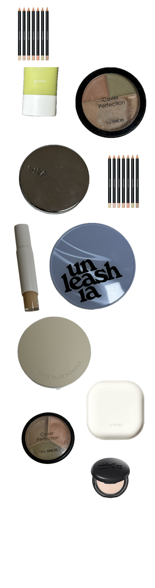
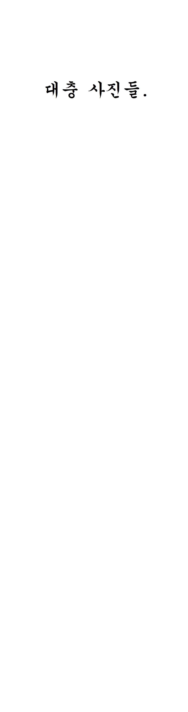

색조
💛삐아 다우니치크
크림블러셔에 발을 들이게 한 제품. 일단 크림 블러셔치고 엄청 촉촉한 편은 아님. 색감도 예쁘고 완전 촉촉한게 아니라 바르기가 쉬운편. 섞어서 발라도 예쁘고 아무튼 예쁨. 새로운색 나올때마다 냐금냐금 사모으는중. 적당히 촉촉하고 적당한 광에 다양한 색상 저렴한 가격. 안살 이유가 없음. 크림 블러셔 입문용으로 강추.💖릴리바이레드 치크밤 복숭빔
내가 가진 블러셔 중에 제일 힛팬을 크게본놈..(물론퍼프가다먹긴함) 일단 색이 너무 예쁘고 손으로 발라도 예쁜데 퍼프로 발라도 아주 좋음. 필리밀리 말조스랑 굉장히 잘씀. 같이 주는 하트 퍼프는 갠적으로 구림. 근데 묘하게 착색이 되는 느낌이? 있음. 이건 일단 살짝 세미매트한 편임(크림치크치고). 물론 건조하진 않음. 무엇보다 색상이 예쁘고 바르기가 쉬운 편임. 릴바레 하트 패키지가 귀여워서 항상 사모으게 되는 경향이 있음. 크림블러셔 입문용으로 릴바레와 삐아를 강력추천합니다.💛에뛰드 핑카이브 블러셔
이게 왜 한정이었는지.. 물론 생각해보면 나중돼서 이라인 재고 탈탈 털고있던걸 계속 보긴 했지만. 아무튼 한정으로 두기엔 색이 너무 예쁜데요.. 질감도 무난하고 괜찮고 색이 예쁘고.. 귀찮으면 이걸로 블러셔랑 눈에도 걍 슥슥 바르고 그대로 나가는. 아무튼 색이 너무 예쁜. 같은 라인 팔레트도 잘썼는데 에뛰드는 뭘 사도 평타는 치는듯. 근데 지금보니까 아직도 팔고있네 머지?💛홀리카 마이페이브 인퓨징 블러쉬
기존에 홀리카에 있던 호랑이 그려진 무어를 잘썼는데 그라인 싹 없어지고 얘네가 나왔었나? 생각보다 단단한 느낌인데 발색이 안되는건 아님. 대체로 색상들이 연한 편이기도 하고 무난하고 예쁨. 웬만해서 진하게 뭉치거나 잘못발리는 일이 많이 없어서 팍팍바르기 ㄱㅊ음. 질감도 굿. 색감도 굿. 근데 나처럼 내장브러쉬를 안쓴다면 좀 공간차지를 할지도.. 아냐 이런게 휴대하기엔 ㄱㅊ을지도.. 홀리카 4구 공용기랑 똑같은 사이즈라 아래 브러쉬빼고 섀도우 두개 채우거나 블러셔 2구짜리로 만들어 쓰는 사람도 많더라. 그렇게 써도 조을듯. 순정파인 나는 안그러겟지만(ㅋㅋ).💛컬러그램 멀티 젤리 스틱
첨에 왔을때 똑 떨어져있어서 당황했던놈.. 인기는 없는놈같긴한데 생각보다 ㄱㅊ음. 근데 좀 발색이 연한 편이고.. 손으로 발색하기 어렵고 무조건 말조스같은데 잔뜩 덕지덕지발라서 볼에 올려야 좀 색감이나 이런게 티남. 색을 진하게 올리고싶진 않은데 광을 주고싶을때 사용하면 ㄹㅇ찰떡인놈. 근데 호수가 너무 적어서 아쉬운데 인기없어서 새로운호수는 안나올듯.💛vdl 치크스테인 블러셔 바운싱피치
인기많길래 사봤는데 확실히 인기있는놈은 이유가 있다. 색감이 너무 예쁘고 블러효과도 ㄱㅊ은편. 대신 가루날림도 꽤 있는편. 같은 라인 다른색 몇개 더 갖고있는데 역시 젤 인기있는놈은 다 이유가 있다. 머쓰지~할때 주워다 써도 실패없을제품.💛페리페라 요거트얌얌해
진짜 휘뚜루마뚜루템으로 굿. 색이 연한 편이라 막발라도 안진해져서 괜찮고 이것도 약간 단단한 편임. 가격도 저렴하고 다 좋은데.. 이색상 어째서 단종? 젤 인기있던 색으로 기억하는데 어쩐지 올영에 들어오는거 보고 오!했는데 이놈이 없더라니 단종됐더라. 튤립라인 중에서 이거랑 슬쩍보면 비슷한 색이 있긴 한데 달라. 명도는 비슷하지만.. 이 요얌 특유의 살짝 핑키한 느낌이 없어서 왜 단종시켰는지 뢰알 모를제품.. 하나밖에 안쟁여둬서 아껴씀.💛투에이엔 하이라이터
생각보다 잘쓴놈. 색상도 다양하게 나오고 가격도 ㄱㅊ아서 냐금냐금 사모으기도 좋음. 요즘 색상 다양하게 내줘서 좋긴 한데 사실 내가 잘쓰는건 클리어랑 쉘임. 입자가 큰편은 아닌데 하라 바른 티는 남. 휴대하기 좋은 사이즈긴 한데 갖고다니면 깨질듯. 가격 ㄱㅊ고 적당히 티나는 하라를 찾는다면 투에이엔. 추천합니다💛에스쁘아 톤페어링 하이라이터 씨쉘
첨엔 흠.. 했는데 의외로 꽤나 잘쓴 제품. 은은한 편이라 여기저기 쓰긴 좋은데 또 안바른 것 같진 않고.. 하라 바르고싶은데 너무 하라가 튀고 싶진 않다 할때 집어들게 된다. 흔히 말하는 진주광.. 은은한 진주광 찾는사람에게 찰떡콩떡. 양도 개많음💛오프라 하이라이터
요즘은 오프라가 너무 싸가지없어져서 어이없지만 아무튼 화려한 하라를 찾는다면 또 오프라만한 무난템이 없긴함. 근데 가격이 점점 싸가지가 없어지고 할인도 싸가지가 없어지고. 근데 제품은 또 좋고.. 모든제품 미니로 만들어줘. 솔직히 미니 아닌 버전은 뢰알 개커서 손녀의손녀까지물려줘도 남을만한템임. 아무튼 빔이 오지고.. 색상도 다양한 편이라 선택지도 많고... 글고 무엇보다 핑크 빡. 블루 빡. 그린 빡. 해주는게 굿. 오프라 더 일해. 할인은 옛날처럼 하고.💖디올 백스테이지 글로우 페이스 팔레트 로즈골드
좀 예쁜 하라를 써야겠다. 싶으면 쓰는놈.. 진짜 이것저것 써봐도 왜 로골 로골 하는지 이해가 되는놈.. 이거저거 써봐도 사실 로골이 제일 예쁘긴 해. 대신 은은한걸 좋아한다면.. 아워 인캔디센트로가세요. 근데 진짜 하라 좋아하면 하나 사두면 진짜 잘쓸놈.💛페리페라 올테무 자고일어났는데힙하면어떡ㅋㅋ
생각보다.. 꽤나 잘쓴 팔레트. 엄해보이는데 생각보다 엄하지 않게 쓸 수 있음. 이걸 쓴다고?해도 막상 앞쪽 색들만 쓰면 ㄱㅊ은 것 같음. 물론 나만의 생각임. 이 라인이 싹 리뉴얼이 돼서 얘도 단종일 것 같은데 아마 남아있는 재고는 얘는 있을듯? 잘쓴 애긴 한데 꼭 얘여야 한다! 는 아니고 이런 색감으로 색상 많은걸 찾는다면 ㄱㅊ을듯💖삐아 레디 투 웨어 팔레트 누드블러쉬
팔레트들 중 아마 거의 제일 많이 쓴 팔레트가 아닐까.. 일단 6구라 뭘쓸지 너무 고민하지 않아도됨. 개인적으로 팔레트 16구 20구 만들어봤자 그게 의미가 있나.. 싶고.. 아무튼 색감이 일단 무난하게 생겼는데 예뻐. 질감도 ㄱㅊ아. 펄도 예뻐. 팔레트를 쓰고싶은데 뭘쓸지 안정했으면 이걸쓰는편. 이 라인들 다른 색상들도 전체적으로 ㄱㅊ음. 6구 팔레트 찾는다면 굿. 근데 오프에 테스터가 거의 없는게 함정. 삐아는 가끔 공홈에서 할인할때 달려가서 사면 굿.💛홀리카홀리카 싱글 졸리,핑키드
싱글 중에 제일 많이 쓴 제품들. 둘다 하나씩은 쟁여뒀고.. 졸리는 진짜 베이스로 깔기 좋음. 약간 탁한 편이긴 한데 생각보다 베이스로 깔았을때 그런 느낌은 많이 안들고 뮤트한 색감들 바를때 베이스로 사용하면 굿임. 핑키드는 베이스로도 좋고 블러셔로도 진짜 잘썼음. 미지근한 핑크라 핑크 좋아한다면 들여도 후회는없을지도.. 가격도 저렴하고.. 질감도 좋고.. 색감도 예쁘고.. 밝은색들 특유의 허연 둥둥 뜨는 느낌도 별로 없음.💛바비브라운 럭스 아이섀도우 문스톤
유명한건 이유가 다 있다. 진짜 괜히 유명한 놈이 아님.. 진짜 바르면 펄이 영롱하게 빛나는데.. 팬색보면 좀 누래보이는데 바르면 전혀. 바탕색은 거의 안올라오고 펄감만 촤르르.. 기깔난 펄 섀도우 들이고싶다.. 여깁니다.💛클리오 프로 싱글 섀도우 핀라이트
얘는 확실히 핑크빛도는 펄인데 마찬가지로 너무 예쁨. 퍼석한 펄 아니고 촉촉한 느낌이고 꽤 화려한편. 같은 라인에 펄펙션도 많이 썼었는데 갠적인 픽은 핀라이트. 핑크빛 메이크업에 찰떡콩떡. 펄펙션은 문스톤이랑 비슷한 느낌.💛에스쁘아 리얼 아이 팔레트 피오니라떼
이 라인은 오트라떼가 유명한데 사실 난 오트라떼는 잘 모르겠고(많이사용한흔적을보여주며, 근데진짜잘모르겠음).. 내픽은 피오니라뗴.. 물론 이제 오트라뗴고 피오니라떼고 다 없어졌지만.. 쿨한척하는데 쿨하진 않음. 그래서 오히려 잘쓰긴 했는데 아무튼 색도 이게 더 내취향이고.. 활용성도 당연히 좋아서 잘썼는데 에스쁘아 돌아와라. 감잃지마라. 니네그따구로굴지마.
